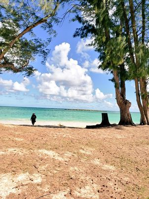

About
森 勇翔
Introduction
私は北海道情報大学通信教育経営情報学部システム情報学科兼名古屋情報メディア専門学校総合情報(大学併修)学科３年の森勇翔です。
私の趣味は旅行に行くことです。旅行では今までに県外のみではなく海外にも数回程度行きました。そのときの写真を別のページに貼ります。ギャラリーへ
私の今の目標は全県制覇することです笑
| 2018年4月 | 愛知県立愛知総合工科高等学校 電子情報学科 入学 |
|---|---|
| 2021年3月 | 愛知県立愛知総合工科高等学校 電子情報学科 卒業 |
| 2021年4月 | 北海道情報大学 通信教育部 経営情報学部 システム情報学科 入学 |
| 2021年4月 | 名古屋情報メディア専門学校 総合情報(大学併修)学科 AIシステム専攻 入学 |
| 2020年11月 | Microsoft Office Specialist Excel2016 取得 |
|---|---|
| 2022年10月 | 基本情報技術者試験 合格 |
| 高校 : 3年 | VBA 課題研究を行い私たちはVBAでの課題研究を行いました。 この時VBAを使ったことがなくまずは使い方を調べ理解することから始めました。VBAを理解するのに時間がかかり、最終的にはExcelでできるマインスイーパーやモグラたたきといったミニゲームを個人で作りました。 |
|---|---|
| 大学 : 1年 | Java、Python、html、css これらの基礎的な知識を身に付けました。またhtmlでは授業でサイトを実際に作りました。 |
| 大学 : 2年 | Python、html、css、c# pythonではarucoマーカーについてや画像認識の仕方を授業で行いました。 html cssでは掲示板サイトを作りmysqlと用いてアカウント登録、ログイン、投稿を行えるサイトを授業で作りました。 c#では基礎的な知識に加え、csv等を入出力やポートを開きメールの送受信を行うような簡易的なwindowsアプリケーションを授業で作成しました。 |
| 大学 : 3年 | Kotlin Android StudioでKotlinの基礎的な知識を学び、またAPIの活用の仕方、sqliteの使い方などを学びました。 |